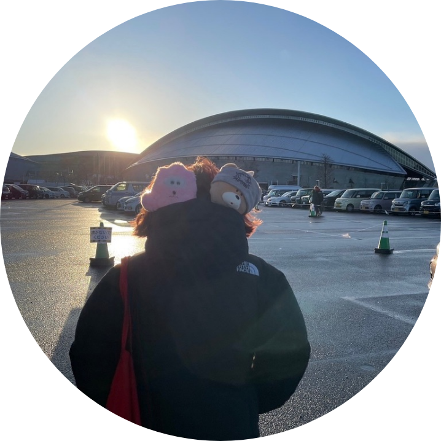
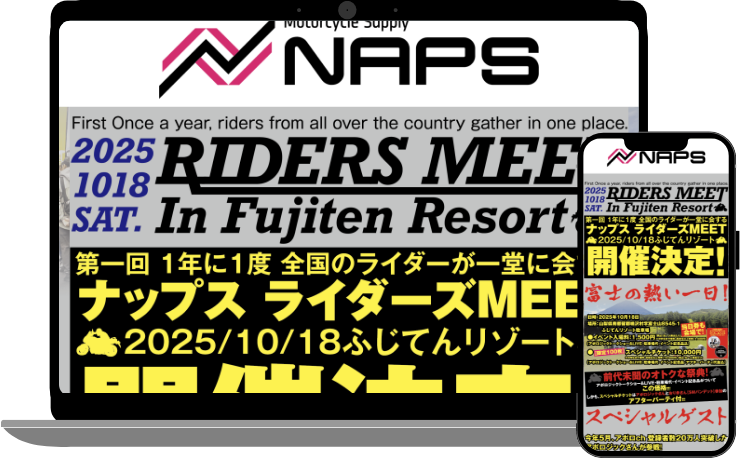
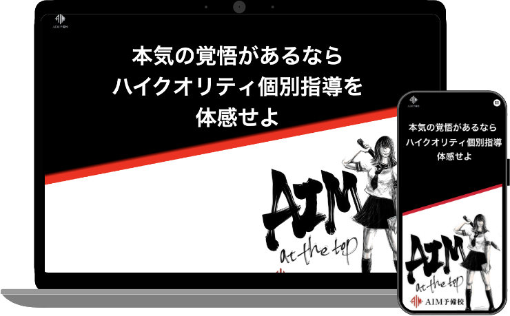
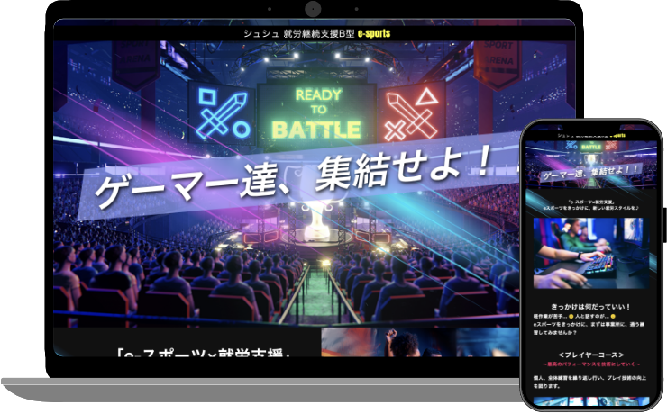
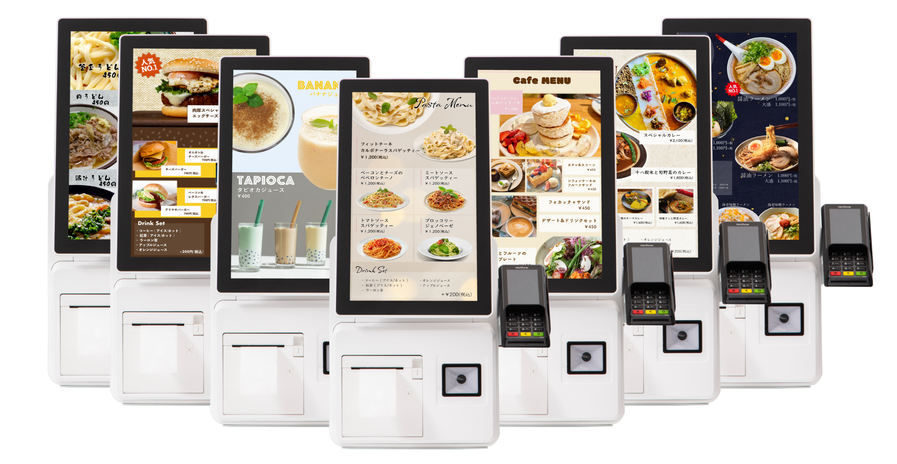
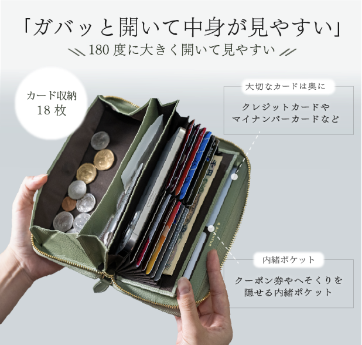
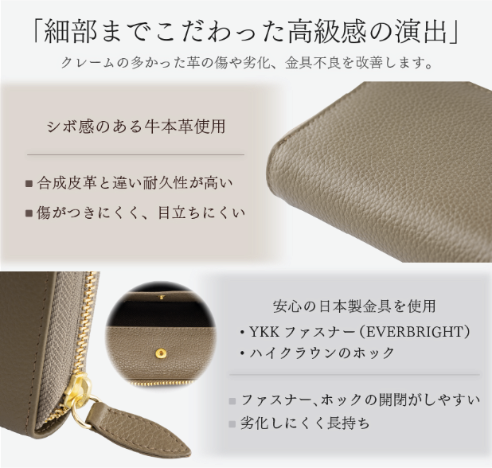
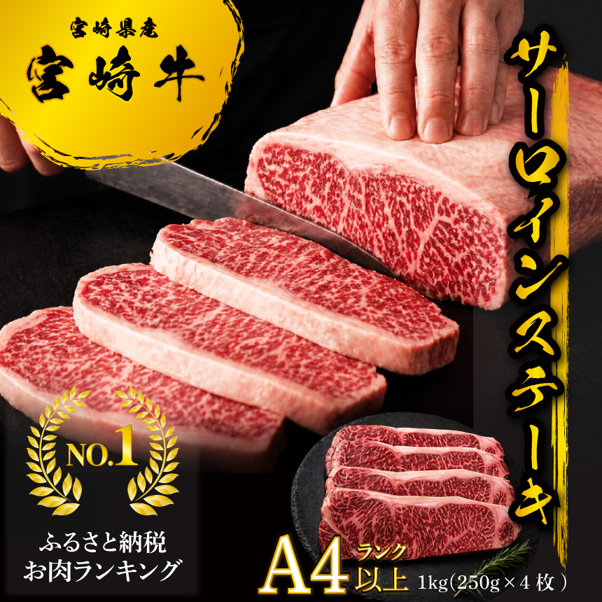

Web Designer
Fujiki Haruka

Fujiki Haruka
Age：32
Height：150cm
Based in：fukuoka
Hobby：Live music / sports
pet：neko
ライブやスポーツ観戦が好きで、
人の想いや熱量が重なる瞬間に魅力を感じます。
デザインを通して、誰かの大切なものや想いを、
より魅力的に届けたいと考えています。

変更や追加が発生しやすい案件だったため、セクションごとに役割を分けて実装しました。
構造を整理することで、柔軟に対応できる設計を意識しています。

毎年の更新を担当する中で、運用のしやすさを重視しました。
修正時の負担を減らせるよう、扱いやすい構造で制作しています。

情報量や掲載内容の変化を想定し、視認性と安定性を意識して構築しました。
動画を含む構成でも、快適に閲覧できるレイアウトを心がけています。
バナーやサムネイル、モックアップなど、Webに関連するビジュアル制作も行っています。
用途や掲載先に合わせて、伝わりやすさと見やすさを意識して制作しています。




それぞれの役割を尊重しながら協力し合い、安心して相談し合える関係の中で、
丁寧に積み上げていく制作に携わりたいと考えています。
分からないことはそのままにせず、一度整理したうえで共有することを心がけています。
デザインや設計の意図を丁寧に汲み取り、細部までこだわりながら着実に形にしていきます。